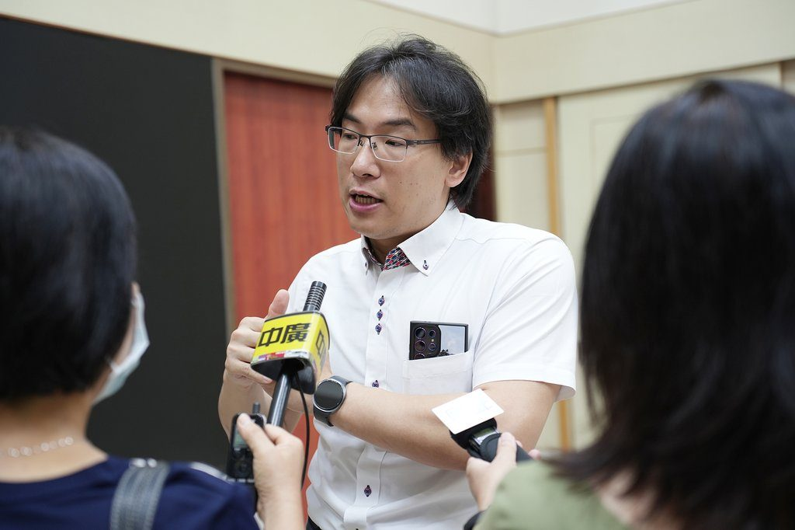

花蓮突破巴金森氏症治療瓶頸：慈濟與興大研發「即用型」iPSC神經球

可樂電子報小編/編輯
隨著全球高齡化加速，巴金森氏症及阿茲海默症等神經退化性疾病愈發普遍。其中，巴金森氏症因腦內多巴胺神經細胞持續退化，目前尚無法根治。慈濟醫療法人創新研發中心與國立中興大學生命科學系於6月12日聯合發表「即用型」iPSC神經球研發成果。這項研究已在6月登上《Nature》旗下國際期刊《npj Parkinson’s Disease》

美國傳奇拳王阿里及電影《回到未來》男主角米高福克斯皆曾罹患巴金森氏症，長年與疾病共存，也讓這項疾病受到全球關注。近年誘導型多潛能幹細胞（iPSC）技術越發成熟，在日本神經細胞移植治療於2026年已納入健保，為全球再生醫學的重要進展

慈濟創新研發中心團隊、興大生命科學系蘇鴻麟教授，共同建立可長期冷凍保存的人類誘導型多潛能幹細胞（iPSC）來源多巴胺神經前驅細胞平台，解決目前細胞治療長期面臨的保存、運輸與量產難題，並於巴金森氏症動物模型中展現出快速且長期的功能恢復效果

巴金森氏症是全球第二常見的神經退化性疾病，主要因中腦負責分泌多巴胺的神經元逐漸退化死亡所致，患者會出現手部顫抖、肌肉僵硬、動作遲緩及步態異常等症狀
研究團隊此次最大的突破，在於建立具備「即用型（off-the-shelf）」潛力的細胞產品平台。團隊利用三維細胞球（spheroid）技術，成功製備可冷凍保存的多巴胺神經前驅細胞。研究顯示，細胞經長時間冷凍保存後，解凍仍可維持高度存活率與多巴胺神經特性，移植至巴金森氏症動物模型後，也展現快速且持久的功能恢復效果